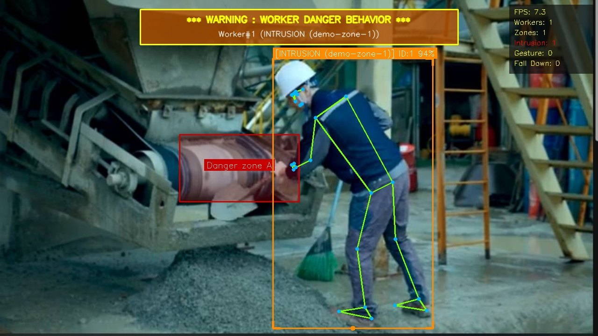

AI 컨베이어 벨트 안전 정지 시스템
제8회 첨단산업·디지털 핵심 실무인재 양성훈련 해커톤 · 자유과제 부문 · 팀 공장수호대(김현진·김가람·박은희·정재승·정재영)
제스처·음성·위험구역 접근을 동시에 감지하는 트리플 트리거 방식의 안전 정지 시스템입니다. 감지 → RAG → Vision LLM 파이프라인으로 사고 리포트까지 자동 생성합니다.
- YOLO(yolo26n)로 사람을 탐지해 위험구역 폴리곤과의 겹침 비율로 접근 판정 — 초기 OpenCV 배경차분(MOG2)은 벨트 움직임 오탐·정지 인물 미검출 문제가 있어 실측 테스트 후 YOLO로 전환
- 이벤트 발생 프레임만 OpenAI Vision API(GPT-4o-mini)로 분석해 상황 요약·위험도·근거 생성(15초 쿨다운으로 비용 관리), 사고 이미지 기반 6개 항목 리포트 API 구현
- RAG가 검색한 법령 근거만으로 리포트를 작성하도록 프롬프트 설계 — 근거 없는 조항·수치 생성 방지, 파이프라인 실패 시에도 감지 흐름이 끊기지 않도록 예외 처리
- 팀장으로 기획 총괄 및 발표 자료·발표 대본 제작
